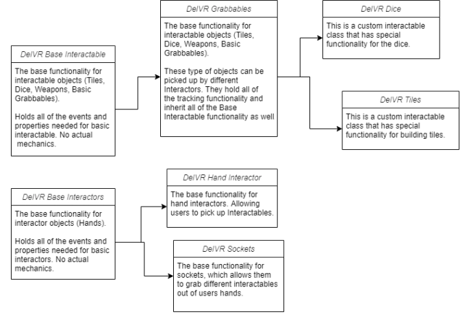

DelVR

About DelVR
DelVR is a Virtual Tabletop platform that runs in Virtual Reality and Desktop. It was designed to allow player to play their own tabletop roleplaying games in a virtual environment. Allowing players to embody their characters and get fully immersed into a virtually build environment. DelVR allows users to create custom environments and play through them like you would in a Tabletop Roleplaying game such as things like D&D.
I was the only developer on this project, which meant I implemented all of the game's functionality. Which consisted of Networking, a completely custom VR Framework and World Building system. This project helped me learn a lot about Unity, Networking and C# in general.
I was the only developer on this project, which meant I implemented all of the game's functionality. Which consisted of Networking, a completely custom VR Framework and World Building system. This project helped me learn a lot about Unity, Networking and C# in general.
I designed and developed all of the VR Interaction code from the ground up meaning that I could have more control and understanding of how the code behaves. The base design of the code structure is as follows:
The biggest reason for this kind of design was so that I could create variants of controllers, so that interactors and interactables could work both in VR and Desktop. Allowing for users to play in both forms and still be able to play with each other.
The videos above show the interaction system also working through network. Alongside this, world syncing was also capable allowing players to jump between different worlds that have been created by the players. Allowing them to role-play through different environments as they progress through their game.

The interaction system needed to be made so that it could function throughout the project without needing to create multiple different scripts to do the same thing with extra features. So I used a Polymophism approach to the interaction. So that the child classes such as dice or tiles could inherit all the necessary properties and functions needed for interaction. This also worked for interactors as well, having this style of framework for interaction allowed me to easily create different forms of interaction throughout the game. Such as different grab modes, like physical and distance or interacting with UI physically or using a laser. The biggest reason for this kind of design was so that I could create variants of controllers, so that interactors and interactables could work both in VR and Desktop. Allowing for users to play in both forms and still be able to play with each other.
Grid System
The building system was made up of a custom grid. Which made it possible to build a different height layers and snapping points throughout the table/world. The grid system also had a shader that rendered a grid texture over the top of the world so that whenever a certain type of block was placed it would apply a grid to it to allow people to track movement distance. But when building props like walls, barrels and more were placed down the grid wouldn't be rendered over the top. The grid render also had custom properties to allow for size changes, colour and projection side.
Tile Customisation
More importantly, was the tiles that could be placed onto the grid. These all had their own custom properties that could be customised through the use of a menu. Both in Desktop and VR.
Building Environments
Save and Loading System
Saving and loading tiles was possible due to a GUID system that was built into each tile. So when a table/environment was saved, the system would then save all of the necessary GUIDs into a text file, ready to be loaded in the future. This also allowed for me to create a copy and paste system of groups of tiles so that they could be placed together.
Undo and Redo Building
Undoing and Redoing was achieved by utilizing the Queue Class collection, by customising certain actions that could be undone and redone allowed for a simple system. Which would also work over network. In the example below you can see it working in the building system. But it was also tied into grabbing objects as well.
The building system was made up of a custom grid. Which made it possible to build a different height layers and snapping points throughout the table/world. The grid system also had a shader that rendered a grid texture over the top of the world so that whenever a certain type of block was placed it would apply a grid to it to allow people to track movement distance. But when building props like walls, barrels and more were placed down the grid wouldn't be rendered over the top. The grid render also had custom properties to allow for size changes, colour and projection side.
More importantly, was the tiles that could be placed onto the grid. These all had their own custom properties that could be customised through the use of a menu. Both in Desktop and VR.
Saving and loading tiles was possible due to a GUID system that was built into each tile. So when a table/environment was saved, the system would then save all of the necessary GUIDs into a text file, ready to be loaded in the future. This also allowed for me to create a copy and paste system of groups of tiles so that they could be placed together.
Undoing and Redoing was achieved by utilizing the Queue Class collection, by customising certain actions that could be undone and redone allowed for a simple system. Which would also work over network. In the example below you can see it working in the building system. But it was also tied into grabbing objects as well.

Feel free to contact me regarding any type of work or positions avaliable.
You can reach me at these locations: